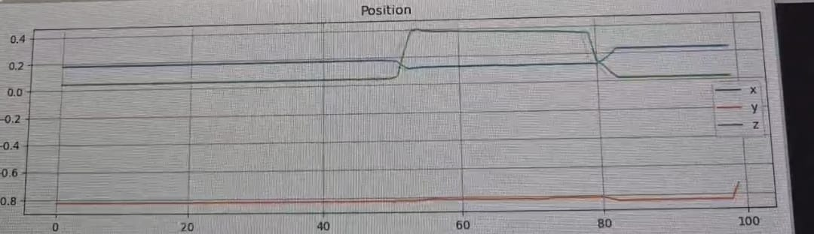
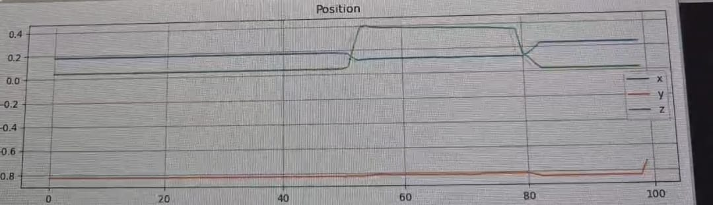

SCOPE
The projectile dynamics of the ankle attachment in the pogo stick-type model is characterized through a separate controlled experiment using a motion-capture test setup. This setup is designed to drop the ankle joint at varied heights and angles, allowing the identification of accurate motion trajectory.
The primary activities are:
- Motion Capture Data Integration: Use the OptiTrack system to capture precise motion data of the projectile and the ankle attachment. This might involve understanding the forces at play and the object's path in 3D space.
- Trajectory Modeling: Develop a model of the projectile dynamics, with consideration of factors like angle, velocity, and external forces acting upon it. The model must allow for the prediction of the object's movement based on the captured data.
- Robot Integration (UR5): Use the UR5 robot arm to perform a pick-up action based on the real-time position data provided by OptiTrack. The UR5 should be capable of automatically adjusting its position to pick up the object at the correct point along its trajectory.
- Real-time Data Processing: Ensure the system can process OptiTrack data in real time, dynamically adjusting the robot's behavior according to the projectile's motion.
PROJECT SETUP
Prototype
The prototype is the ankle with a 3D printed triangular retroreflective array, which is the specimen for our test drop setup. The prototype also has an extenstion for the gripper to hold on to.
OptiTrack
OptiTrack is the hardware and tracking technology.
- Motion Capture System: These are infrared cameras that track reflective markers.
- Sychronization Tools:Devices that sync cameras and other equipments.
- Software SDKs and APIs: These are tools to access real time motion tracking data into applications like ROS2, python.
Motive is the software that works with OptiTrack hardware. It's a convenient interface for: Camera Calibration, Marker labeling, Data Streaming and Recording and Exporting Data
Define Experiment Parameters:
The UR5 picks up the prototype at a specified height and angle and drops it for the OptiTrack to collect data.
ROS2-Based Software Configuration:
For getting the position and orientation, a ROS2 architecture was implemented, which gave a PyQt5 GUI, which plots the position and orientation with respect to time
Another ROS2 architecture can be deployed into UR5 which can take the rigid body's position and dictate the height and angle of the drop
EXPERIMENTATION
Hardware Configuration

The Hardware Configuration for our experimentation setup.
SOFTWARE CONFIGURATION
Calibration
Calibration of an OptiTrack motion capture system is the critical step in obtaining accurate 3D tracking of markers throughout the capture volume. Begin by physically positioning all cameras around the tracking volume, making sure they are securely mounted, facing inward, and have overlapping fields of view for best marker visibility. With the cameras positioned, open the Motive software and navigate to the calibration tab. Begin camera calibration by waving the calibration wand, which has several precisely located reflective markers on it. Slowly wave the wand throughout the entire capture volume so that it is clearly seen by a series of cameras from varying viewpoints. This movement allows the software to determine the position and orientation of each camera through triangulation. Calibration accuracy is improved as more information are recorded by the system from various areas and angles. When enough data is collected, click "Calculate" to calculate the camera calibration solution. With that done, perform ground plane calibration by placing a calibration square or an L-frame at the desired origin position on the floor. This will allow you to define the coordinate system of your tracking volume. Carefully align and capture this reference, then confirm it in Motive. Lastly, to confirm the overall calibration, load or create a rigid body and move it across the tracking volume. Observe any occurrence of drift, jitter, or position errors—these are signs of whether additional calibration or camera adjustment is necessary. A good calibration guarantees stable, high-accuracy tracking for your motion capture system.
Networking
As discussed before, most of the communications to ROS2 on the Optitrack happens through NatNet SDK. If the MOTIVE is in the same system or a different system as ROS2, a netplan is required which establishes a static IP, in a VM, as communications happen via the Ethernet. For data transfer, the streaming engine uses multicast and uses streaming engine IP with UDP Ports for transfers. Attached below is a python program which takes data from the MOTIVE system to an external system i.e. my windows host machine, via the UDP ports, the IP of the streaming engine and the static IP we set for our ethernet. The program generates a live plot for the position and orientation and displays it as well, which proved the possibility of a data communication and got us closer to our goal.
Loading code...
Creating the ROS2 workspace
When inculcating with ROS2, we had to set a static IP by changing the netplan(shown below). While using a brigded adapter which is the ethernet, the below netplan sets up the static IP. Our first option was converting the above python code into a ROS2 workspace. Another alternative is installing a ROS2 Driver for the OptiTrack. While both worked properly, issues arrived when recieving data firewall blocked the data. So it is really important to look into:
- The Streaming Engine IP recieved from the Motive interface.
- The Static IP set in the netplan.
- Firewalls to recieve NatNet SDK packets.
ROS2 ARCHITECTURE
DATA COLLECTION
GUI
(Check Image Gallery) The video shows a plot of the position and orientation of the rigid body being plotted, while doing the drop test which gets saved as a csv file
CONCLUSION
We devised an setup to analyse projectile dynamics using OptiTrack. This experiment presents a novel and efficient way to test prototypes and robots to further enhance research findings support simulation data. The project started as a physically dropping setup which will, in the next section proceeds to bring automation by using a UR5.
IMAGE GALLERY
 
